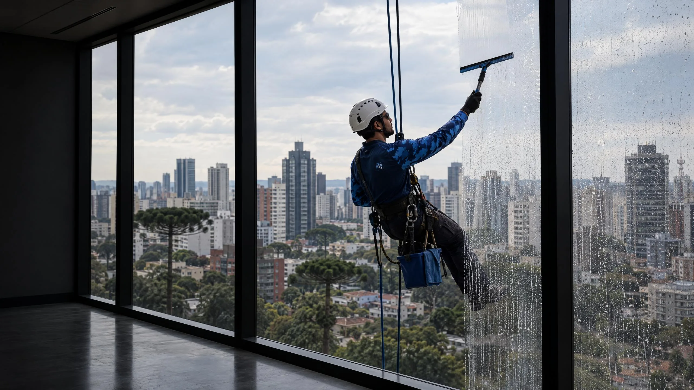
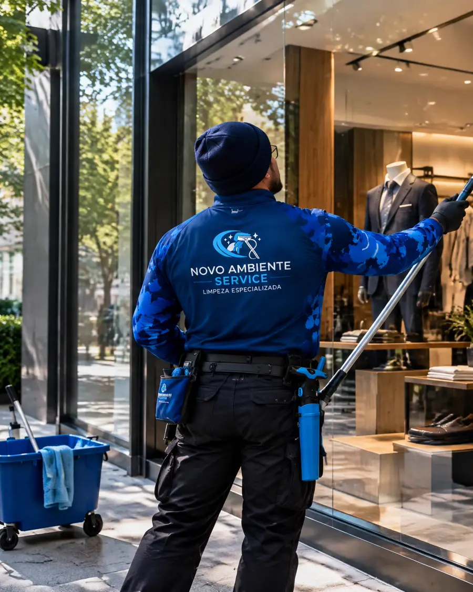
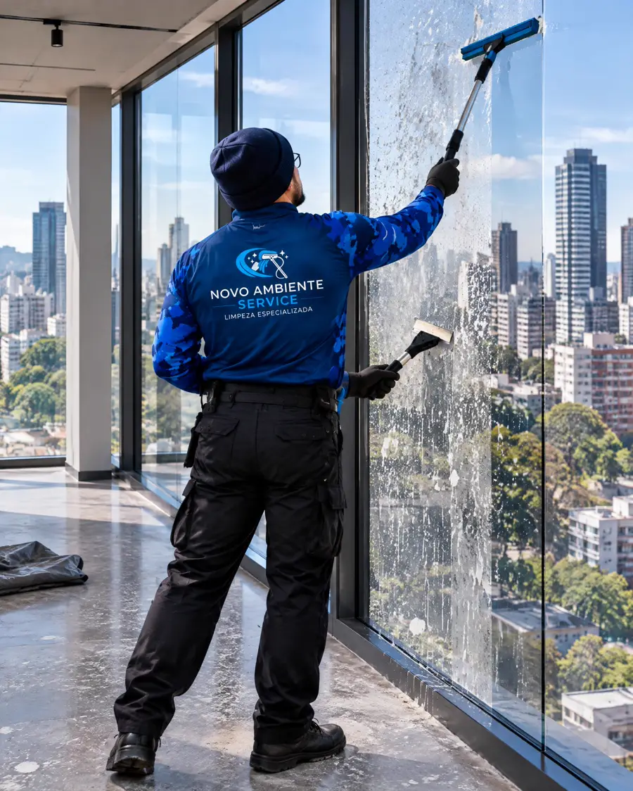

Condomínio
Fachada de vidro e vidro alto que ninguém do prédio alcança, e se alguém se machucar lá em cima quem responde é o síndico. Equipe de altura, data marcada e foto do antes e depois pra mostrar aos moradores.
Orçamento pro condomínio →
Do térreo ao último andar: vidros em altura com rapel, fachadas de vidro, vitrines, casas e pós-obra.
Vidro existe pra deixar a luz entrar. Quando a chuva, a poeira e a obra tomam conta, a Novo Ambiente devolve a transparência, em casa, na loja e no prédio inteiro.
Marca de chuva, poeira de obra, gordura e marca de dedo saem. A fachada volta a refletir o céu, e quem está dentro volta a ver a cidade.
Fachada de vidro, torre comercial. imagem ilustrativa No site no ar, entram fotos de limpezas feitas pela Novo Ambiente.
Do vidro da sacada à pele de vidro de um prédio comercial, cada um pede um jeito de chegar e um jeito de limpar.
Rapel, vidros altos e de difícil acesso, átrios e elevadores panorâmicos. Pra onde escada e haste não chegam.
Pele de vidro (Structural Glazing), cortina de fachada (Curtain Wall) e vidros externos de prédios, edifícios comerciais e condomínios.

Vitrines, portas e painéis de vidro do chão ao teto em lojas de alto padrão, clínicas e escritórios, no horário que não atrapalha o atendimento.

Janelas e esquadrias, envidraçamento de sacada, guarda-corpos e vidros de pé-direito alto, sem ninguém da família subir em escada.
Limpeza pós-obra de vidros: tinta, cimento e poeira de obra saem sem riscar o vidro novo.

As fotos desta prévia são ilustrativas.
Fachada de vidro e vidro alto que ninguém do prédio alcança, e se alguém se machucar lá em cima quem responde é o síndico. Equipe de altura, data marcada e foto do antes e depois pra mostrar aos moradores.
Orçamento pro condomínio →Vitrine com marca de dedo e mancha de chuva toda semana, e funcionário parando o atendimento pra passar pano. Vidro sempre limpo, com dia e horário combinados.
Orçamento pra empresa →Janela alta, pé-direito alto e vidro de sacada que você não alcança sem se arriscar. Vidro transparente de novo, sem escada pra ninguém da família.
Orçamento pra casa →Mande uma foto do vidro pelo WhatsApp e receba o orçamento sem compromisso.